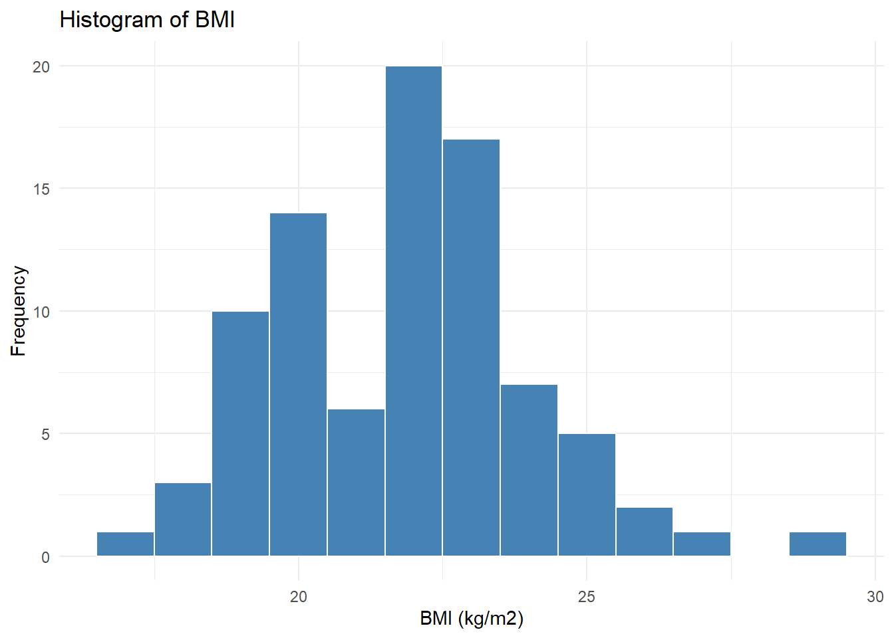
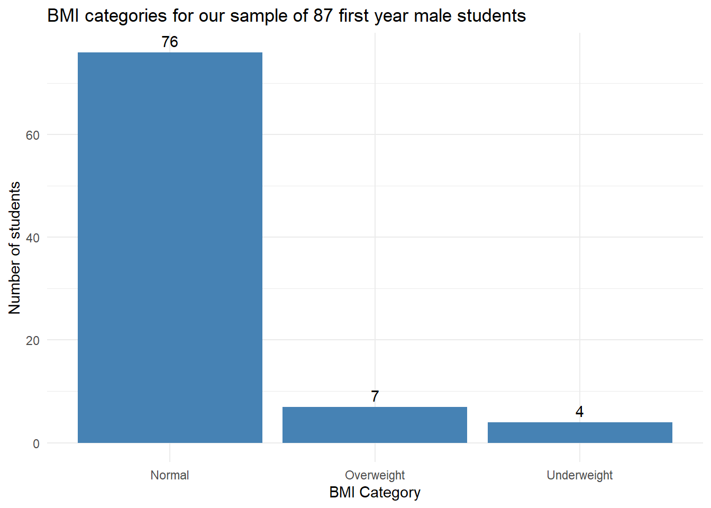
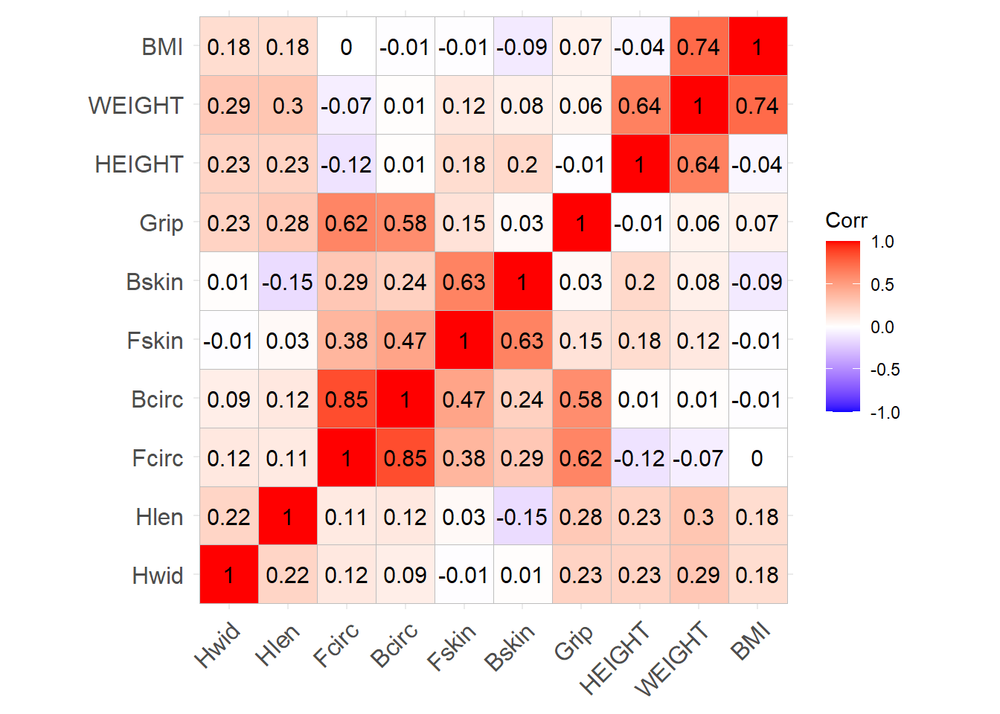
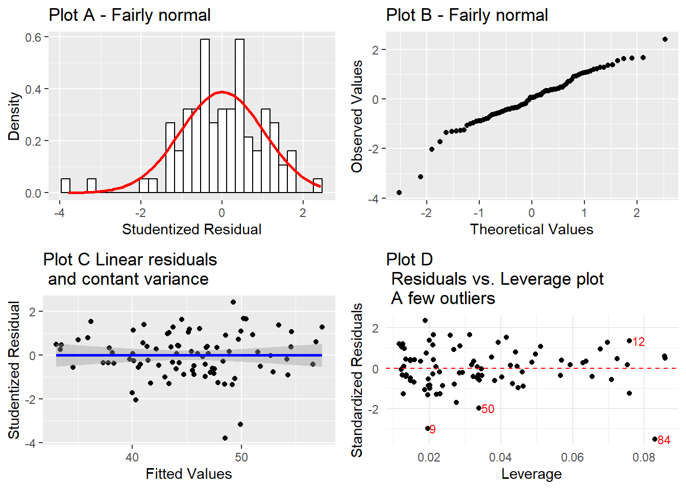
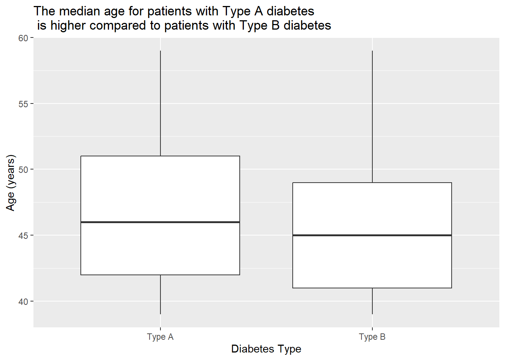
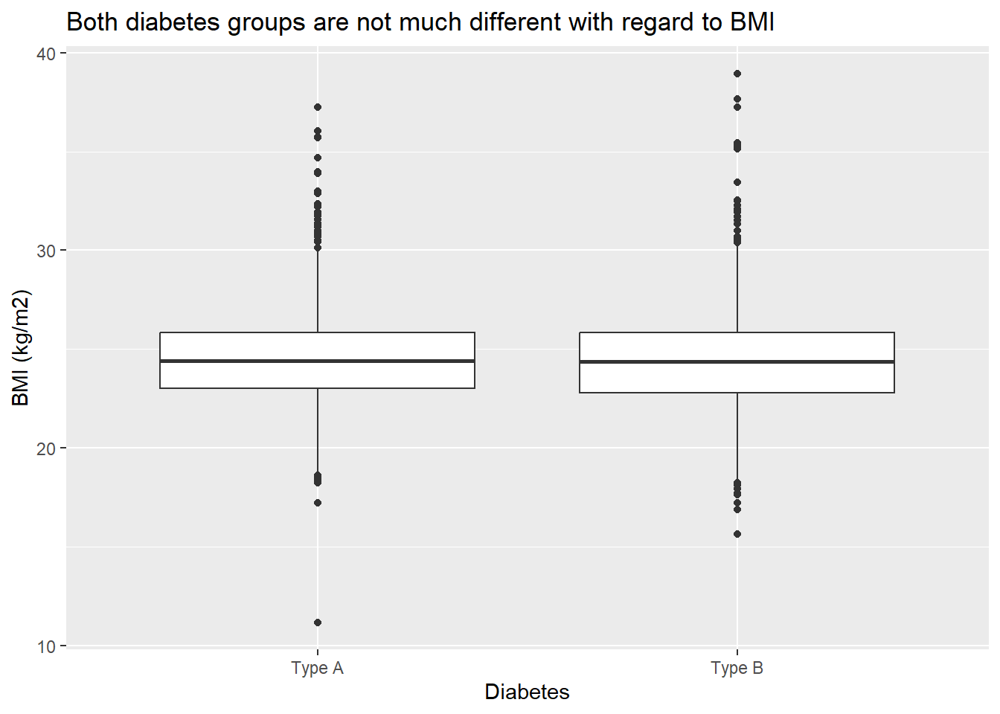
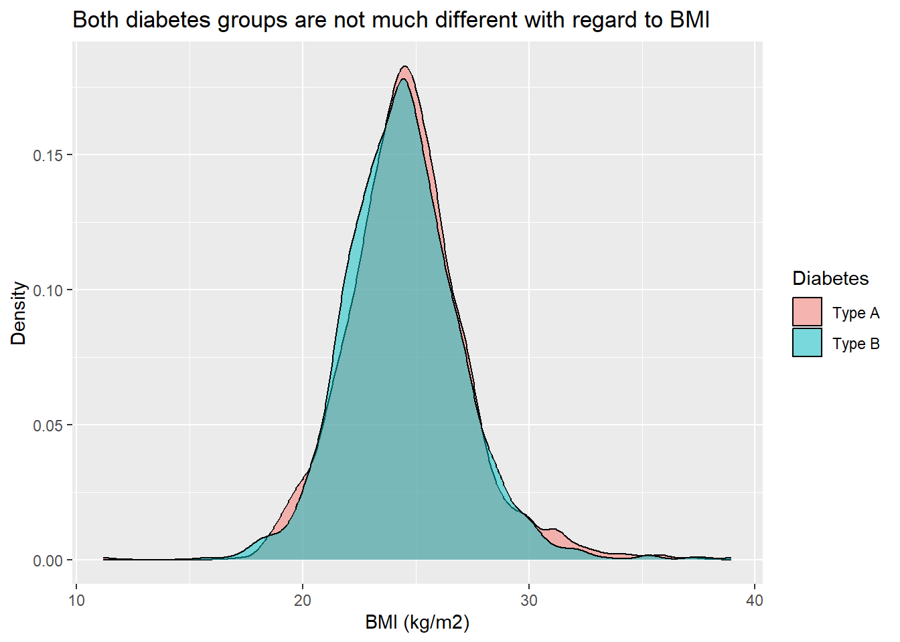
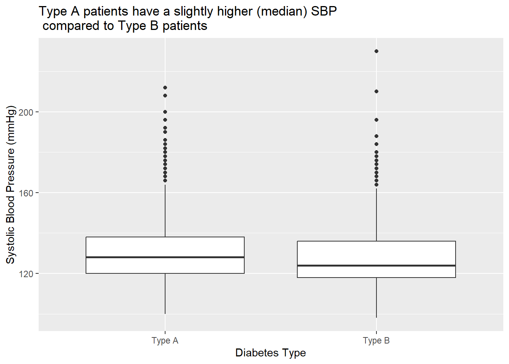
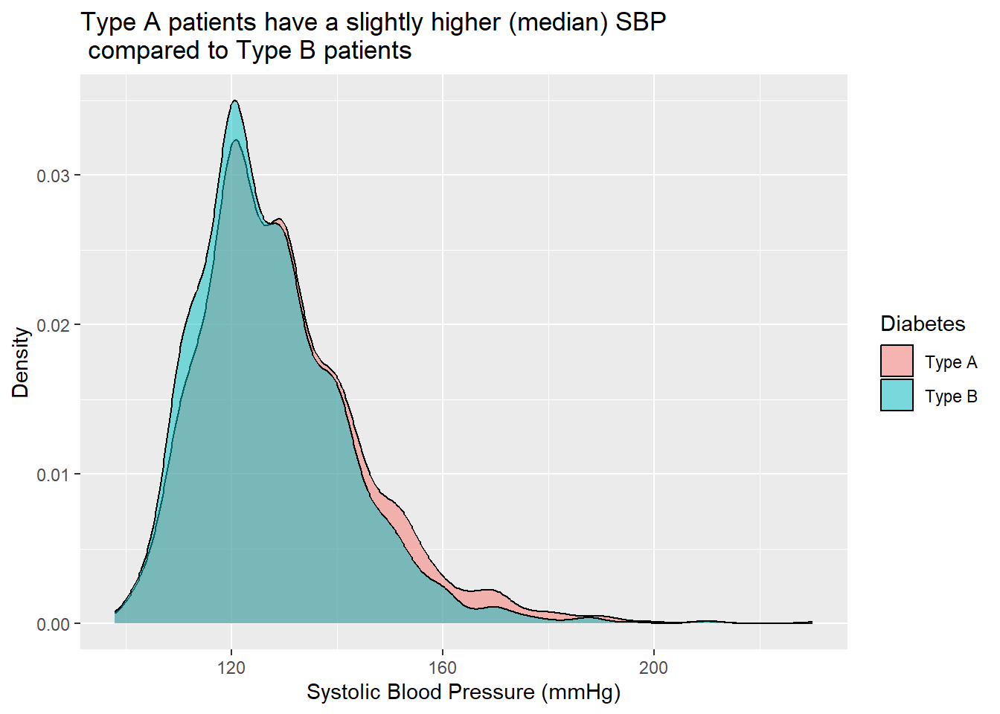

| Statistic | Value |
|---|---|
| Minimum | 16.97531 |
| 1st Quartile | 20.06953 |
| Median | 21.91381 |
| Mean | 21.87393 |
| 3rd Quartile | 23.15556 |
| Maximum | 28.72679 |
Commentary: Our data is fairly symmetric with the median and mean very close together indicating that there are not many extreme values in our sample. The maximum BMI in our sample is 28.7 (kg/m2) which mean we do not have any student who is obese in our sample (BMI greater than or equal to 30)

Commentary: The histogram supports the observation I noted above that there are not many extreme values in our sample and we have only one outlying student whose BMI is close to 30.

Commentary: Most students in our sample (76) have a normal BMI and four (4) of them are underweight with the remaining seven (7) being classified as overweight. As I mentioned earlier, no student in our sample is obese.

Commentary: Some of the variables in our dataset (predictors of grip strength) are moderately correlated with each other. Weight and BMI are strongly correlated with a correlation score of 0.74. Forearm circumference and bicep circumference are also highly correlated (0.85). The implication of this is that to avoid the problem of multicollinearity in the linear regression model I aim to develop in the next section, I will only select one of the other of those variables that are highly correlated with each other.
I used the correlation matrix shown above to make a selection of variables to include in the initial regression model based on the strength of relationship between the independent variables and the outcome variable (grip strength). The variables selected are:
I have excluded other variables due to either low correlation with the outcome variable or a medium-high correlation with variables already selected. For example, Bicep circumference has 0.85 with forecarm circumference and has been excluded to avoid multicollinearity. I decided the order for which to enter the variables in the model based on the strength of correlation.
| Variable | Coefficient | Std.Error | t-Statistic | Prob. | Significance |
|---|---|---|---|---|---|
| Intercept | -58.92 | 15.09 | -3.90 | 0.00 | * |
| Forearm circumference | 2.74 | 0.39 | 7.03 | 0.00 | * |
| Hand length | 1.39 | 0.65 | 2.11 | 0.04 | * |
| Hand width | 0.56 | 0.40 | 1.37 | 0.17 | |
| Weight | 0.01 | 0.08 | 0.11 | 0.91 | |
| R-squared | 0.4465 | F-statistic | 16.54 | ||
| Adjusted R-squared | 0.4195 | P-value | 0.00 |
Considering that weight and hand width seem to not make any substantial contribution to our model in the presence of the other variables we included, we can drop them to get a more parsimonious model.
| Variable | Coefficient | Std.Error | t-Statistic | Prob. | 95% confidence interval |
|---|---|---|---|---|---|
| Intercept | -57.74 | 15.09 | -3.90 | 0.000208 | [-87.40, -28.13] |
| Forearm circumference | 2.79 | 0.39 | 7.03 | 0.00000000019 | [2.03, 3.56] |
| Hand length | 1.60 | 0.65 | 2.11 | 0.011880 | [0.36, 2.83] |
| R-squared | 0.4323 | F-statistic | 31.98 | ||
| Adjusted R-squared | 0.4188 | P-value | 0.00 |
Our model is defined as:
\[ gripstrength_i = -57.74 + (2.79 forearmcircumference_i) + (1.60hand length_i) - (1.1) \]
Both coefficients are positive and statistically significant at 0.05 confidence level which implies that higher forearm circumference yields a higher grip strength and a longer hand results in a high grip strength.
Forearm circumference (b = 2.79): This value indicates that if the effect of hand length is held constant, a 1mm increase in forearm circumference will yield a 2.79kg extra grip strength. The true value of this coefficient in the population is likely to be between 2.03kg and 3.56kg at 95% confidence level.
Hand length (b = 1.60): This indicates that a 1cm increase in hand length will yield 1.60kg extra grip strength. This is true if the effect of forearm circumference is held constant. The true value of this coefficient in the population is likely to be between 0.36cm and 2.84cm at 95% confidence level.
We can use the equation 1.1 above to predict the grip strength of any male student at Glasgow University (our population) if we have measurements of their forearm circumference and hand length by plugging the values respectively into the equation.
For example - if we consider Emeka with forearm circumference of 40.5cm and hand length of 32.8cm. His grip strength would = \(-57.74 + (2.79*40.5) + (1.60*32.8) = 107.74kg\)
Some key assumptions of the linear regression model include:
We can see below that our VIF values are very close to 1 and we can therefore conclude that our model is not suffering from multicollinearity and that this assumption is satisfied.
## Fcirc Hlen
## 1.011986 1.011986Linearity and homoscedasticity: Linear regression assumes that the error is constant along the value of the dependent variable. We can see that both assumptions are met with the plot of fitted values versus residuals below. We can observe how the points are evenly dispersed around zero and that there is no non-linear pattern. See plot C below.
Normality of residuals: The Q-Q plot and histogram below does not show significant deviation of the observed residuals from normality. See plots A and B below.
Given that these assumptions are met, we can safely conclude that the model appears to be accurate for our sample and generalizable to the population. Forearm circumference and hand length are important in predicting grip strength.
## `stat_bin()` using `bins = 30`. Pick better value with `binwidth`.
## `geom_smooth()` using formula = 'y ~ x'
## id age bmi chd chol
## Min. : 2001 Min. :39.00 Min. :11.19 No :2897 Min. :103.0
## 1st Qu.: 3741 1st Qu.:42.00 1st Qu.:22.96 Yes: 257 1st Qu.:197.2
## Median :11406 Median :45.00 Median :24.39 Median :223.0
## Mean :10478 Mean :46.28 Mean :24.52 Mean :226.4
## 3rd Qu.:13115 3rd Qu.:50.00 3rd Qu.:25.84 3rd Qu.:253.0
## Max. :22101 Max. :59.00 Max. :38.95 Max. :645.0
## NA's :12
## dbp diabetes ncigs sbp smoke
## Min. : 58.00 Type A:1589 Min. : 0.0 Min. : 98.0 No :1652
## 1st Qu.: 76.00 Type B:1565 1st Qu.: 0.0 1st Qu.:120.0 Yes:1502
## Median : 80.00 Median : 0.0 Median :126.0
## Mean : 82.02 Mean :11.6 Mean :128.6
## 3rd Qu.: 86.00 3rd Qu.:20.0 3rd Qu.:136.0
## Max. :150.00 Max. :99.0 Max. :230.0
##
## Sex
## Female:1617
## Male :1537
##
##
##
##
## 
Commentary: As seen in the boxplots above, the median age for patients with Type A diabetes is higher compared to patients with Type B diabetes.

Commentary: As seen in the boxplots and density plot above, both diabetes groups are not much different with regard to BMI. For example we can see an almost complete overlap of the density plot for both groups.

Commentary: As we can observe in both boxplots and density plots above, Type A patients have a slightly higher average (median) SBP compared to Type B patients
| Predictor | Coefficient | Std. Error | Odds Ratio | Confidence Interval | p-value |
|---|---|---|---|---|---|
| (Intercept) | 2.406 | 0.591 | - | 0.000047 | |
| Age (years) | -0.027 | 0.010 | 0.974 | (0.955, 0.992) | 0.005972 |
| Patient has coronary heart disease (Yes) | -0.700 | 0.204 | 0.497 | (0.329, 0.736) | 0.000638 |
| Number of cigarettes smoked per day | -0.012 | 0.004 | 0.988 | (0.981, 0.994) | 0.000543 |
| Systolic blood pressure (mmHg) | -0.007 | 0.004 | 0.992 | (0.985, 0.998) | 0.025469 |
The table shown above is the result for the most parsimonious model I obtained from the data for male patients, the initial model included patient cholesterol level and BMI which were dropped due to non-significant p-values. The interpretation of the model coefficients are as follows with their corresponding confidence interval. Our reference category for the outcome variable (diabetes type) is Type A diabetes.
Age (years): For every one-year increase in age, the odds of having Type B diabetes, relative to Type A diabetes, decreased by approximately 2.6% (Odds Ratio = 0.974, 95% Confidence Interval: 0.955 to 0.992).
Patient has coronary heart disease (Yes): Male patients with coronary heart disease had approximately 50.3% lower odds of having Type B diabetes, compared to Type A diabetes (Odds Ratio = 0.497, 95% Confidence Interval: 0.329 to 0.736).
Number of cigarettes smoked per day: With each additional cigarette smoked per day, the odds of having Type B diabetes, relative to Type A diabetes, decreased by approximately 1.2% (Odds Ratio = 0.988, 95% Confidence Interval: 0.981 to 0.994).
Systolic blood pressure: For every one-unit increase in systolic blood pressure, the odds of having Type B diabetes, compared to Type A diabetes, decreased by approximately 0.8% (Odds Ratio = 0.992, 95% Confidence Interval: 0.985 to 0.998).
| Predictor | Coefficient | Std. Error | Odds Ratio | Confidence Interval | p-value |
|---|---|---|---|---|---|
| (Intercept) | 1.454 | 0.426 | - | 0.0006 | |
| Age | -0.027 | 0.010 | 0.973 | (0.956, 0.991) | 0.0030 |
| Patient has coronary heart disease | -0.723 | 0.199 | 0.485 | (0.326, 0.713) | 0.0003 |
| Number of cigarettes smoked per day | -0.011 | 0.004 | 0.989 | (0.982, 0.996) | 0.0024 |
The table shown above is the result for the most parsimonious model I obtained from the data for female patients, the initial model included whether or not the patient had coronary heart disease which was dropped due to non-significance. The interpretation of the model coefficients are as follows with their corresponding confidence interval. Our reference category for the outcome variable (diabetes type) is Type A diabetes.
Age: For each one-year increase in age, the odds of having Type B diabetes, compared to Type A diabetes, decreased by approximately 2.7% (Odds Ratio = 0.973, 95% Confidence Interval: 0.956 to 0.991).
Patient has coronary heart disease: Male patients with coronary heart disease exhibited approximately 51.5% lower odds of having Type B diabetes compared to Type A diabetes (Odds Ratio = 0.485, 95% Confidence Interval: 0.326 to 0.713).
Number of cigarettes smoked per day: With each additional cigarette smoked per day, the odds of having Type B diabetes, relative to Type A diabetes, decreased by approximately 1.1% (Odds Ratio = 0.989, 95% Confidence Interval: 0.982 to 0.996).
Below I use the Receiver Operating Characteristic curve (ROC) to assess how well my model fit the data. The ROC curve and its Area Under the Curve (AOC) value help us evaluate the model’s performance. The AUC is a number between 0 and 1. If the AUC is 0.5, it means the model is just guessing randomly. A value close to 1 is a model that fits the data well. If the AUC is less than 0.5 (but greater than 0), it means the model is doing worse than random guessing.
## Setting levels: control = Type A, case = Type B## Setting direction: controls < cases## Area under the curve: 0.5951For the model for predicting diabetes type in male patients that I developed in the previous section, the AUC is 0.5951 which suggests that the model has some ability to discriminate between the diabetes type, but its performance is moderate. While it performs better than random guessing, there is room for improvement to achieve stronger predictive power - perhaps through collection of more patient attribute data and finding significant predictors of diabetes type.
## Setting levels: control = Type A, case = Type B## Setting direction: controls < cases## Area under the curve: 0.58For the model for predicting diabetes type in female patients that I developed in the previous section, the AUC is 0.58 which suggests that the model has some ability to discriminate between the diabetes type, but its performance is moderate. While it performs better than random guessing, there is room for improvement to achieve stronger predictive power - perhaps through collection of more patient attribute data and finding significant predictors of diabetes type.
| diabetes | |||
|---|---|---|---|
| Predictors | Odds Ratios | CI | p |
| (Intercept) | 15.67 | 3.67 – 67.88 | <0.001 |
| chol | 1.00 | 1.00 – 1.00 | 0.848 |
| age | 0.97 | 0.95 – 0.99 | 0.005 |
| ncigs | 0.99 | 0.98 – 0.99 | 0.001 |
| sbp | 0.99 | 0.99 – 1.00 | 0.046 |
| bmi | 0.99 | 0.95 – 1.03 | 0.563 |
| chd [Yes] | 0.51 | 0.33 – 0.75 | 0.001 |
| Observations | 1529 | ||
| R2 Tjur | 0.031 | ||
| diabetes | |||
|---|---|---|---|
| Predictors | Odds Ratios | CI | p |
| (Intercept) | 8.25 | 2.71 – 25.39 | <0.001 |
| age | 0.98 | 0.96 – 0.99 | 0.007 |
| chd [Yes] | 0.50 | 0.33 – 0.73 | <0.001 |
| ncigs | 0.99 | 0.98 – 1.00 | 0.002 |
| sbp | 0.99 | 0.99 – 1.00 | 0.082 |
| Observations | 1617 | ||
| R2 Tjur | 0.025 | ||